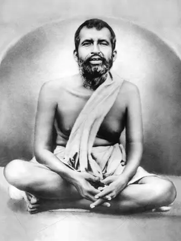

Sri Ramakrishna
Born on 18 February 1836 in the village of Kamarpukur, about sixty miles northwest of Kolkata. His parents, Kshudiram Chattopadhyaya and Chandramani Devi, were poor but very pious and virtuous.
Early Days
From early days, Ramakrishna (childhood name Gadadhar) was disinclined towards formal education and worldly affairs. He was, however, a talented boy, and could sing and paint well. He was fond of serving holy men and listening to their discourses. At the age of six, he experienced the first ecstasy while watching a flight of white cranes moving against the background of black clouds. This tendency to enter into ecstasy intensified with age.
As Priest at Dakshineswar Temple
When Sri Ramakrishna was sixteen, his brother Ramkumar took him to Kolkata. In 1855 the Kali Temple at Dakshineswar built by Rani Rasmani was consecrated and Ramkumar became the chief priest. When he died a few months later, Ramakrishna was appointed the priest. He developed intense devotion to Mother Kali and spent hours in loving adoration of her image. His intense longing culminated in the vision of Mother Kali as boundless effulgence engulfing everything around him.
Intense Spiritual Practices
Impelled by a strong inner urge to experience different aspects of God, he followed the various paths described in the Hindu scriptures and realized God through each of them. The first teacher to appear at Dakshineswar (in 1861) was a remarkable woman known as Bhairavi Brahmani. With her help, Sri Ramakrishna practised various difficult disciplines of the Tantrik path and attained success in all of them.
Three years later came a wandering monk named Totapuri, under whose guidance Sri Ramakrishna attained Nirvikalpa Samadhi, the highest spiritual experience mentioned in the Hindu scriptures. He remained in that state of non-dual existence for six months without the least awareness of even his own body.
Following Other Faiths
With his unquenchable thirst for God, Sri Ramakrishna broke the frontiers of Hinduism, glided through the paths of Islam and Christianity, and attained the highest realization through each of them in a short span of time. He looked upon Jesus and Buddha as incarnations of God, and venerated the ten Sikh Gurus. He expressed the quintessence of his twelve-year-long spiritual realizations in a simple dictum:
"As many faiths, so many paths." - Yato mat, tato path
Coming of the Devotees
As bees swarm around a fully blossomed flower, devotees now started coming to Sri Ramakrishna. The foremost among them was Narendranath, who years later, as Swami Vivekananda, carried the universal message of Vedanta to different parts of the world, revitalized Hinduism, and awakened the soul of India.
The Gospel of Sri Ramakrishna
Sri Ramakrishna did not write any book, nor did he deliver public lectures. Instead, he chose to speak in a simple language using parables and metaphors. His conversations were noted down by his disciple Mahendranath Gupta who published them as Sri Sri Ramakrishna Kathamrita in Bengali. Its English rendering, The Gospel of Sri Ramakrishna, continues to be increasingly popular to this day.
Last Days
He developed cancer of the throat in 1885. His young disciples nursed him day and night. He instilled in them love for one another, and thus laid the foundation for the future monastic brotherhood known as Ramakrishna Math. In the small hours of 16 August 1886, uttering the name of the Divine Mother, Sri Ramakrishna passed into Eternity.
Message of Sri Ramakrishna
- The goal of human life is the realization of the Ultimate Reality which alone can give man supreme fulfilment and everlasting peace.
- The Ultimate Reality is one; but it is personal as well as impersonal, and is indicated by different names in different religions.